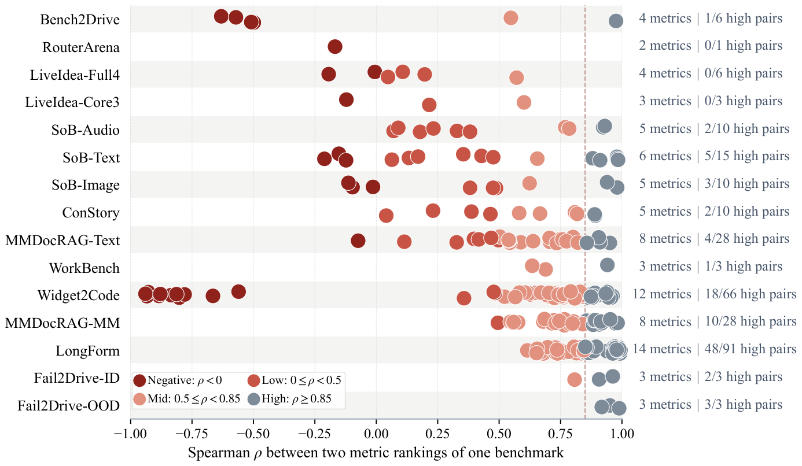
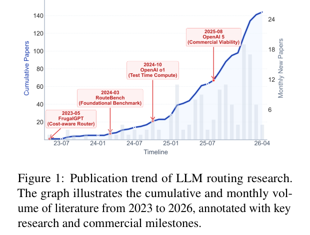
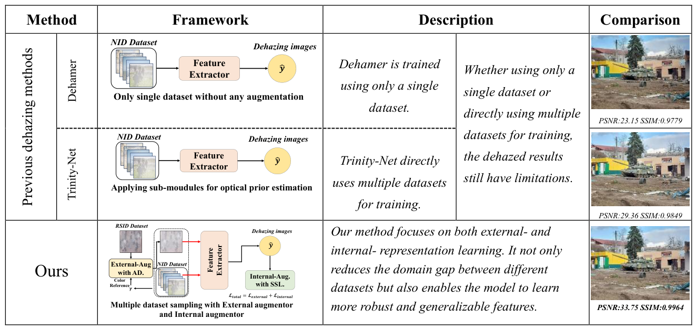
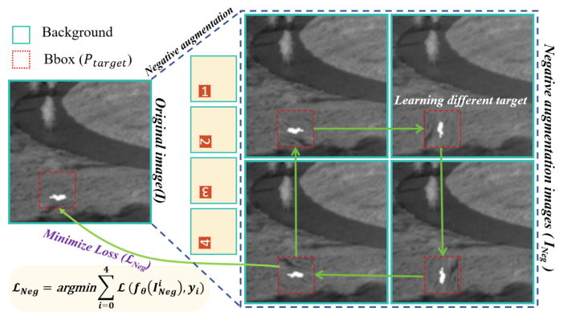

2026

GPT-6-Astra Understands Touch and Outperform Vision--Tactile--Language--Action Models
arXiv:2610.28457 · Preprint
I am a Ph.D. student at the School of Computer Science and Engineering, Sun Yat-sen University, advised by Prof. Liang Lin. My research interests include large language model evaluation and reliability, reasoning, agent systems, and multimodal learning for embodied interaction.
Research interests: LLM Evaluation & Reliability · Reasoning · LLM Agents · Multimodal Learning · Embodied AI
ICLR · NAACL
Pattern Recognition · IEEE Transactions on Neural Networks and Learning Systems (IEEE TNNLS) · Engineering Applications of Artificial Intelligence (EAAI)







